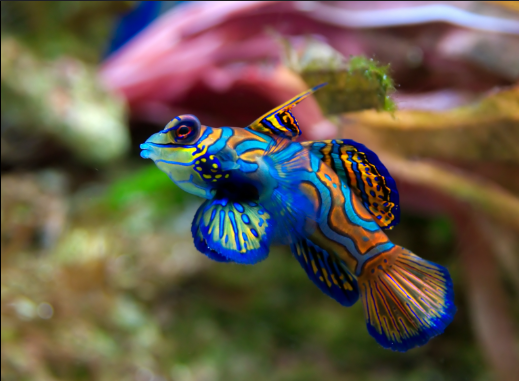
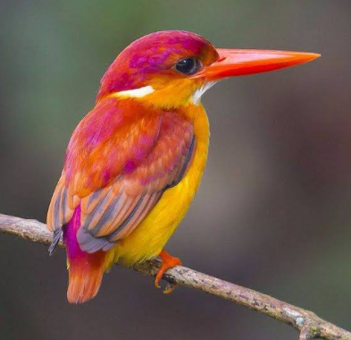

Najbarwniejsze zwierzęta świata
Filmy i dzwięki
Mandaryn wspaniały
Pływa w pobliżu Australii, na Tajwanie i na Filipinach. Jego niebieski kolor pochodzi z pigmentu komórkowego
Ma tylko 6 cm długości. Mieszka w odosobnionych lagunach i rafach, jedząc małe skorupiaki.
Ryba wykazuje agresję w stosunku do przedstawicieli własnego gatunku, dlatego należy trzymać pojedyncze sztuki
➊ ma pomarańczowo-niebieski wzor na ciele dla kamuflażu
➋ ryba z rodziny lirowatych
➌ żyje w niewielkich grupach
| Występowanie: | tropikalne laguny Indopacyfiku: |
|---|---|
| Typ: | strunowce |
| Pokarm: | skorupiaki, glony |
Zimorodek orientalny
Ma około 13 cm długości. Żyje w Azji Południowo-Wschodniej i w Indiach blisko strumieni i rzek i zacienionych obszarów leśnych. Jedzą owady i ślimaki, jak również małe jaszczurki, żaby i kraby.
➊ na głowie różowa czapeczka, reszta pomarańczowo-żółta
➋ ryba z rodziny zimorodków
➌ gatunek nie jest zagrożony wymarciem
| Występowanie: | Euroazja Afryka |
|---|---|
| Typ: | strunowce |
| Pokarm: | ryby, drobne gady |
| Wygląd: | duża głowa, duże długice, ostry dzioby, krótkie nogi |
| Występowanie: | Afryka i Azja |
|---|---|
| Gromada: | ssaki |
| Pokarm: | liście, kwiaty i owoce |
| Wygląd: | różnorodne ubarwienie, długi ogon, dłonie pozbawione kciuka |
| Tryb życia: | nocny |
|---|---|
| Występowanie: | Australia, Europa, Ameryka Południowa | `
| Pokarm: | Nie przyjmuje pokarmu.Żyje kosztem zapasów nagromadzonych w ciele podczas życia larwalnego |